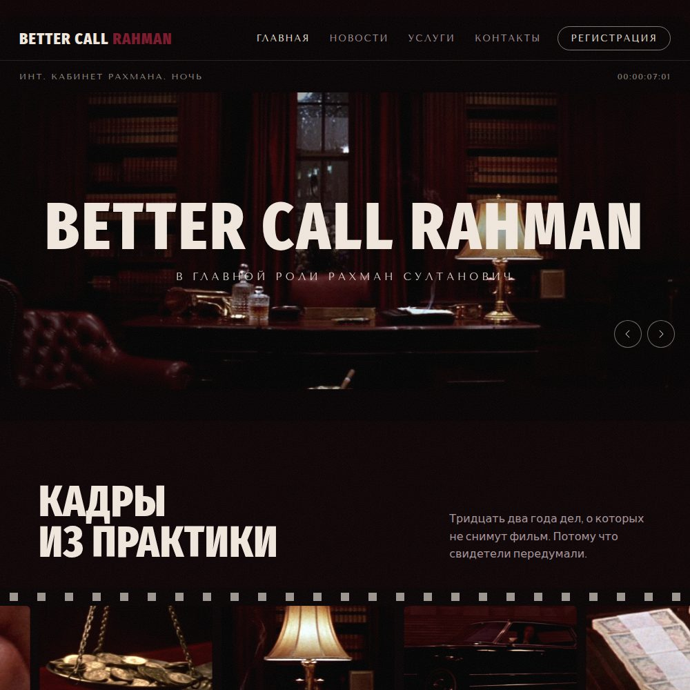
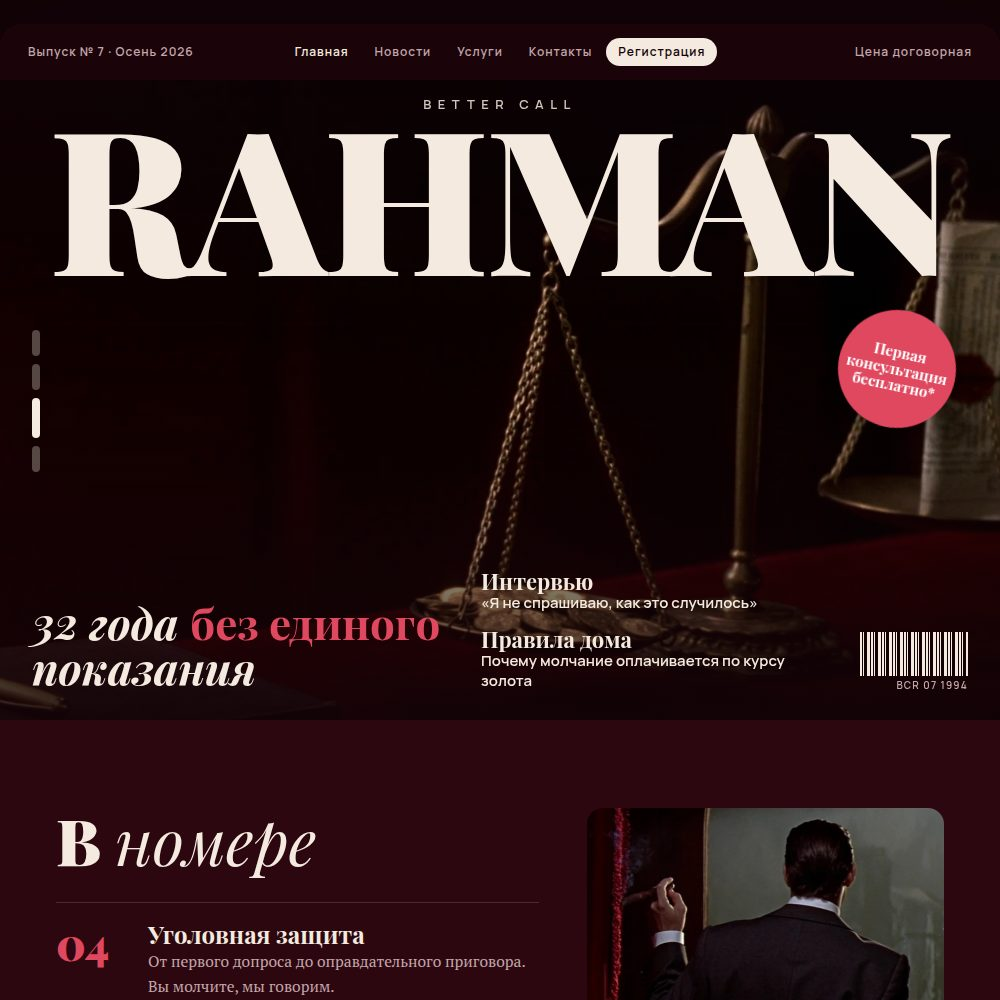
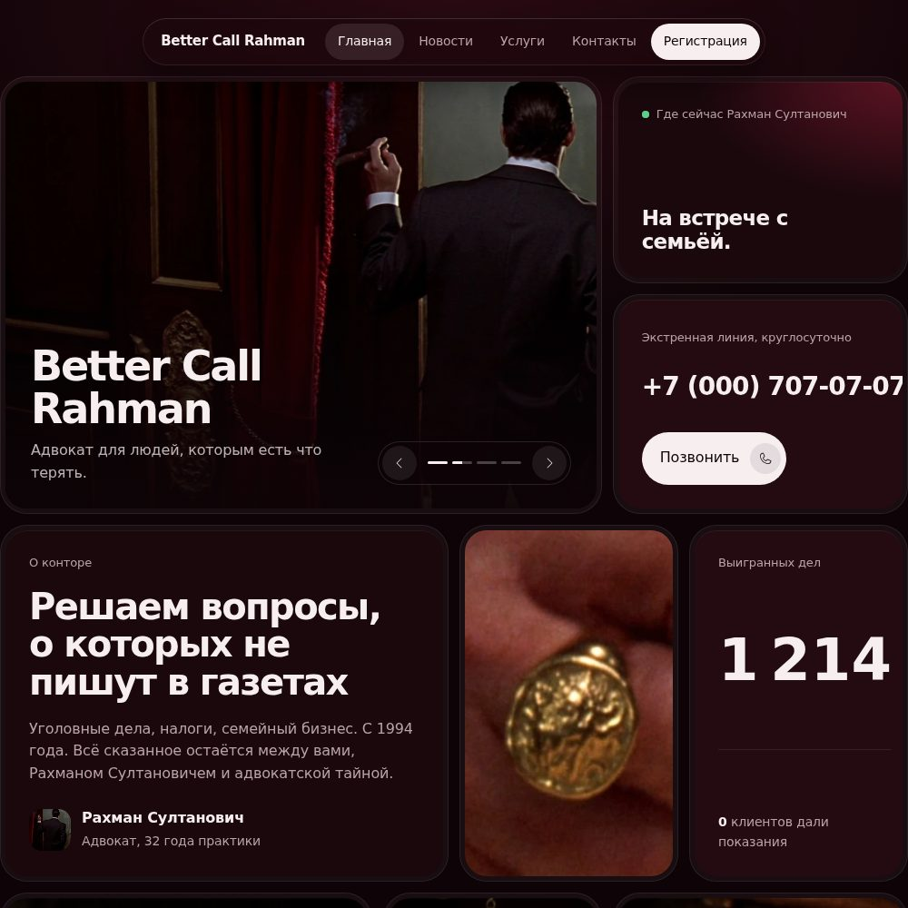
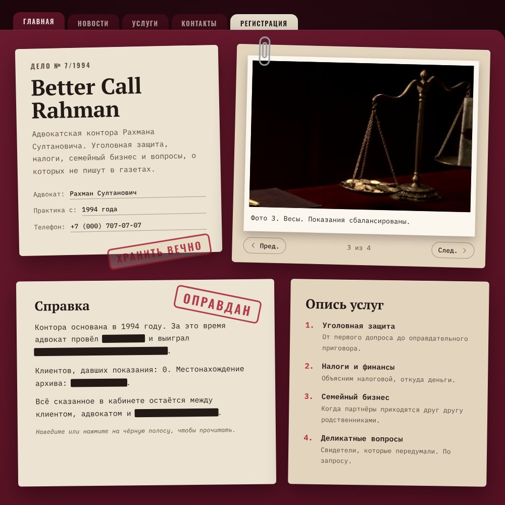

Better Call Rahman, главная страница
Четыре совсем разных направления, все в тёмном бордо. Открой каждое: там работают слайдер и анимации. Потом напиши букву, и я доделаю весь сайт в этом стиле.




Можно смешивать. Например, заставку из «Кино» и плитки из «Люкс-бенто». Просто напиши, что откуда взять.